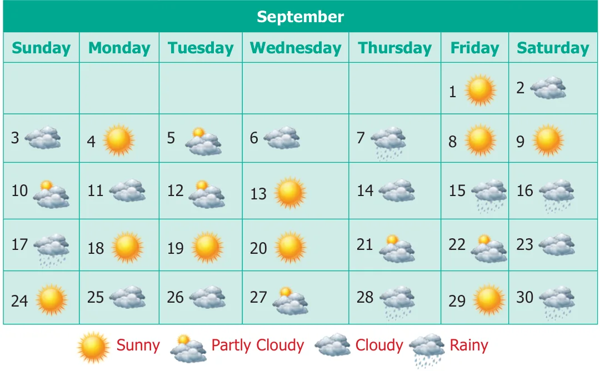
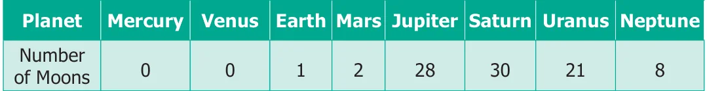
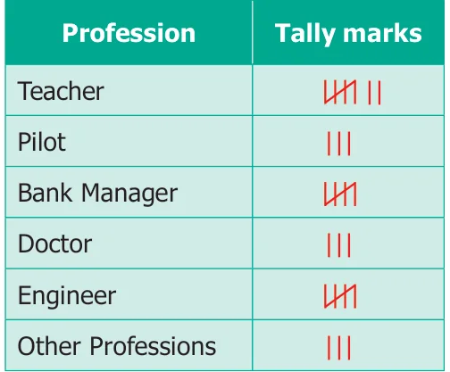
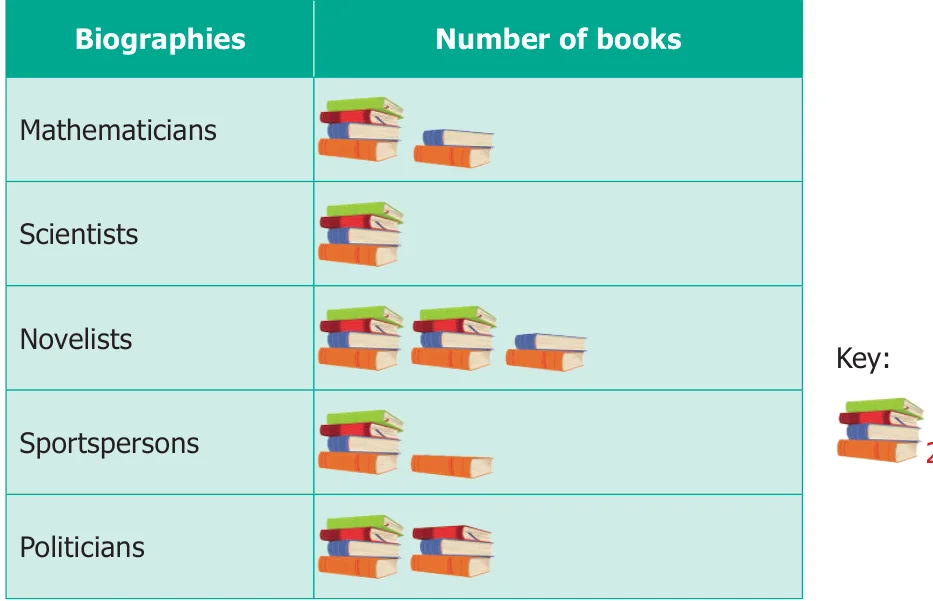
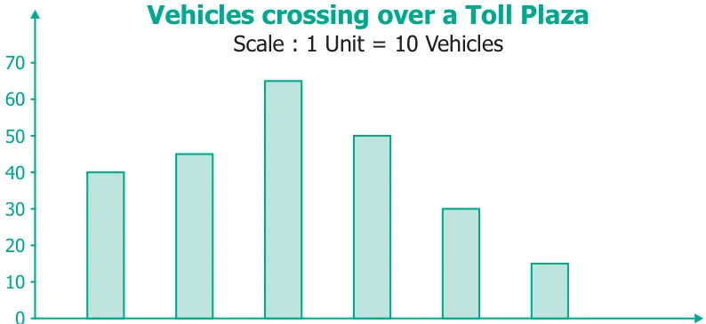

- 4.The prediction of Weather in the month of September is given below.

Make a frequency table of the types of weather by reading the calendar.
- (ii)How many days are either cloudy or partly cloudy?
- (iii)How many days do not have rain? Give two ways to find the answer?
- (iv)Find the ratio of the number of Sunny days to Rainy days.
- 5.The table shows the number of moons that orbit each of the planets in our solar system.

Make a Bar graph for the above data.
- 6.26 students were interviewed to find out what they want to become in future. Their
responses are given in the following table.

Represent this data using Pictograph.
- 7.Yasmin of class VI was given a task to count the number of books which are biographies,
in her school library. The information collected by her is represented as follows.

Observe the pictograph and answer the following questions.
- (i)Which title has the maximum number of biographies?
- (ii)Which title has the minimum number of biographies?
- (iii)Which title has exactly half the number of biographies as Novelists?
- (iv)How many biographies are there on the title of Sportspersons?
- (v)What is the total number of biographies in the library?
- 8.The bar graph illustrates the results of a survey conducted on vehicles crossing over
a Toll Plaza in one hour.

Buses Lorries Cars Vans Two Others Wheelers
Observe the bar graph carefully and fill up the following table.

- 9.The lengths (in the nearest centimetre) of 30 drumsticks are given as follows.